PCMate
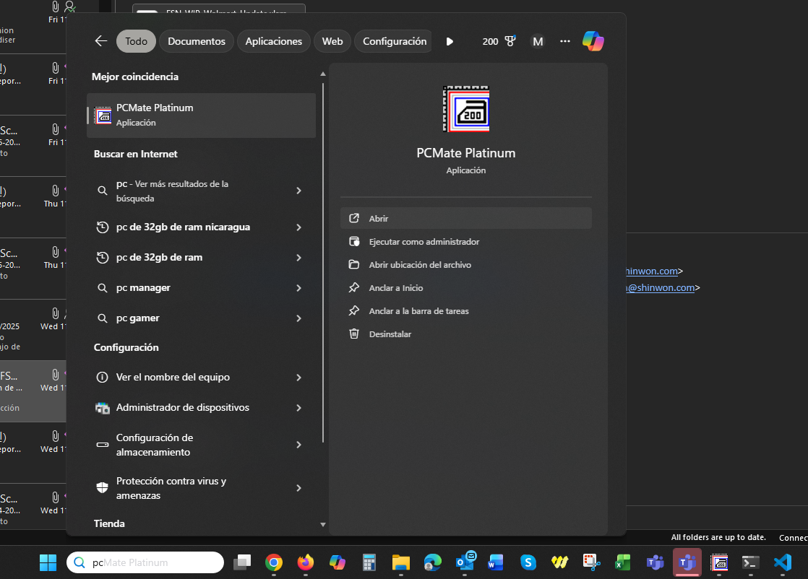
Fashion Stitch Noah
Abrir PCMate - Software de impresión
Disponible en la barra de abajo o al tocar la tecla Win, escribimos an y aparecerá, luego damos en abrir.

Disponible en la barra de abajo o al tocar la tecla Win, escribimos an y aparecerá, luego damos en abrir.
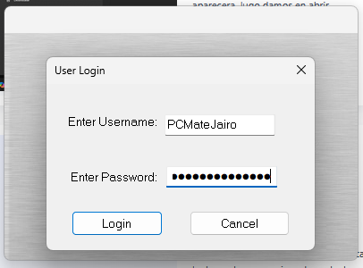
En UserName ingresar el nombre de usuario PCMateJairo y en la clave el PCMateJairo2021, luego dar click en Login u oprimir la tecla Enter.
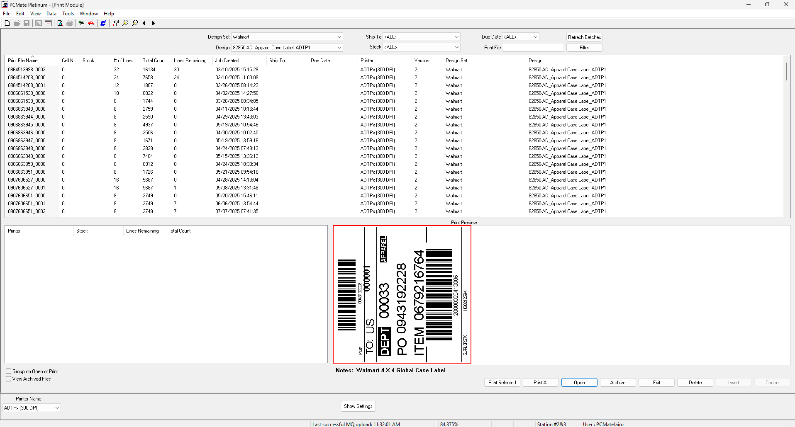
En la pantalla principal se listan todos los PO descargados, en la columna Print File Name aparece el numero de PO.
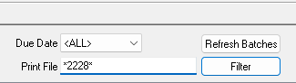
En la parte de arriba de la pantalla principal, al lado derecho aparece el buscador de PO, Se escriben los ultimos cuatro numeros del PO entre asteriscos, luego se da click en Filter para buscar.
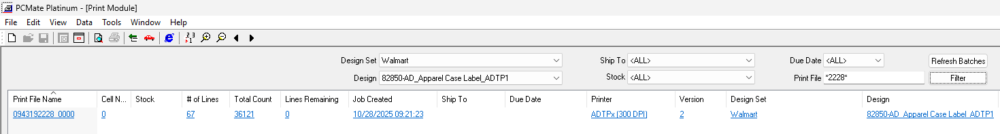
El PO aparece listado en la columna Print File Name, dar click al numero de PO.
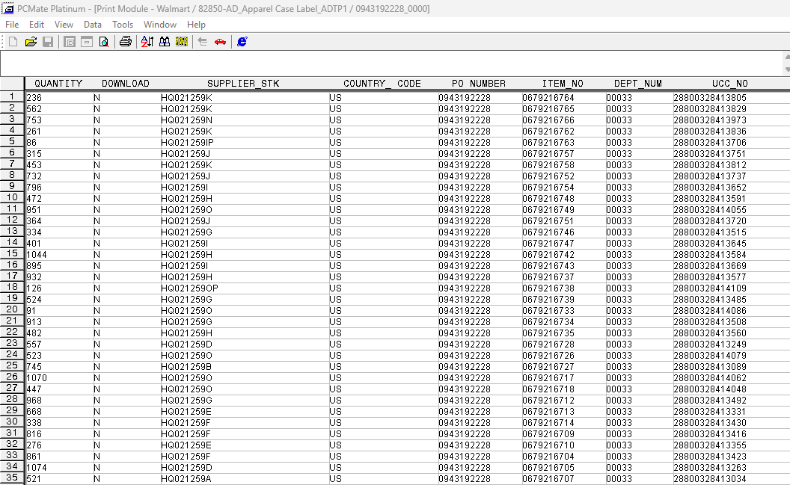
En la pantalla aparece una tabla en la cual se listan todos los Item del PO, en QUANTITY la cantidad de cajas, en ITEM_NO numero de Item y en UCC_NO el numero de UPC.
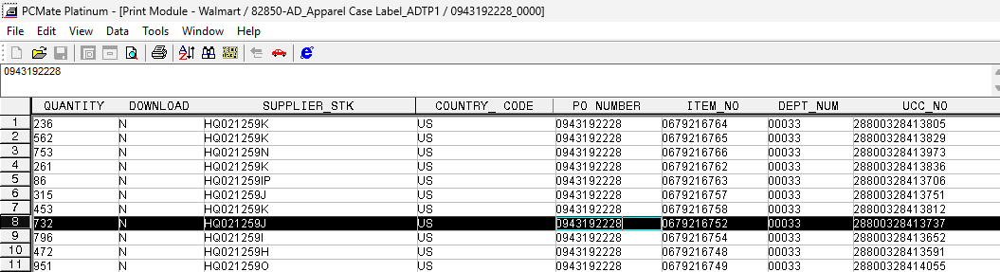
Busque el Ítem Deseado en la columna ITEM_NO. Haga clic en el número de fila correspondiente para resaltarla, en este caso fila numero 8. Presione F9.
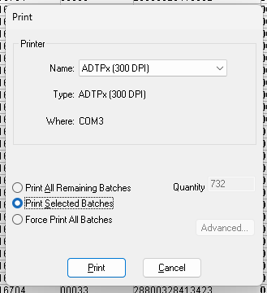
En esta ventana se imprime el Item, damos click donde dice Print Selected Batches, para imprimir lo que esta seleccionado (marcado de negro), luego damos click en el boton Print, esto imprimira el Item completo.
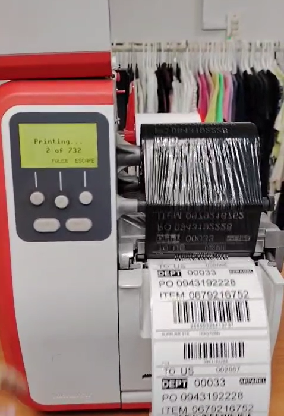
En el caso de Walmart, se imprime todo el Item completo, en este caso los 732 stikers, en la pantalla verde aparecen 2 numeros uno es de los stikers impresos y el otro de orden total de impresion.
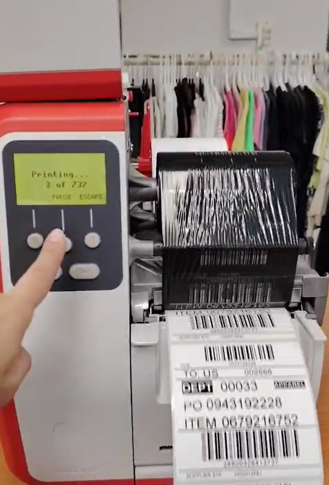
Se oprime una vez, el boton circular de enmedio, para pausar la impresion.
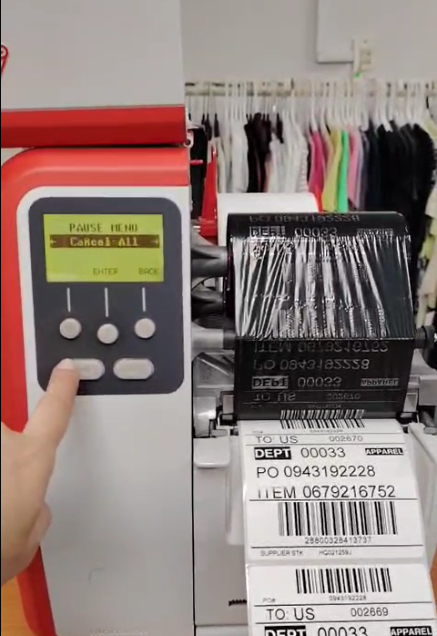
Se oprimen dos veces el boton inferior izquierdo que tiene una flecha, en la imagen se muestra.
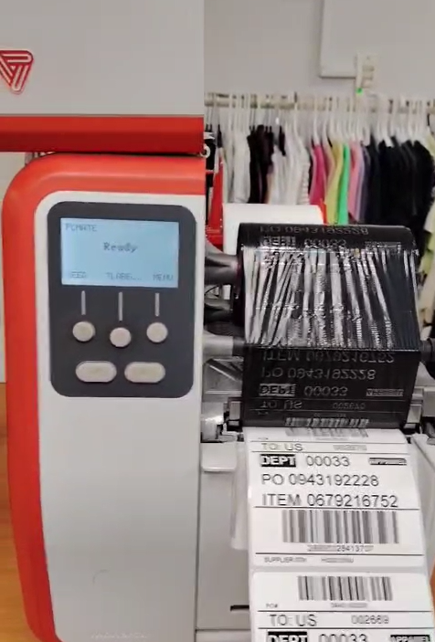
La pantalla ahora es de color blanco indicando que la cancelación fue aceptada, puedes tocar dos veces el boton circular de en medio para sacar un stiker en blanco y cortar mas comodo lo impreso.